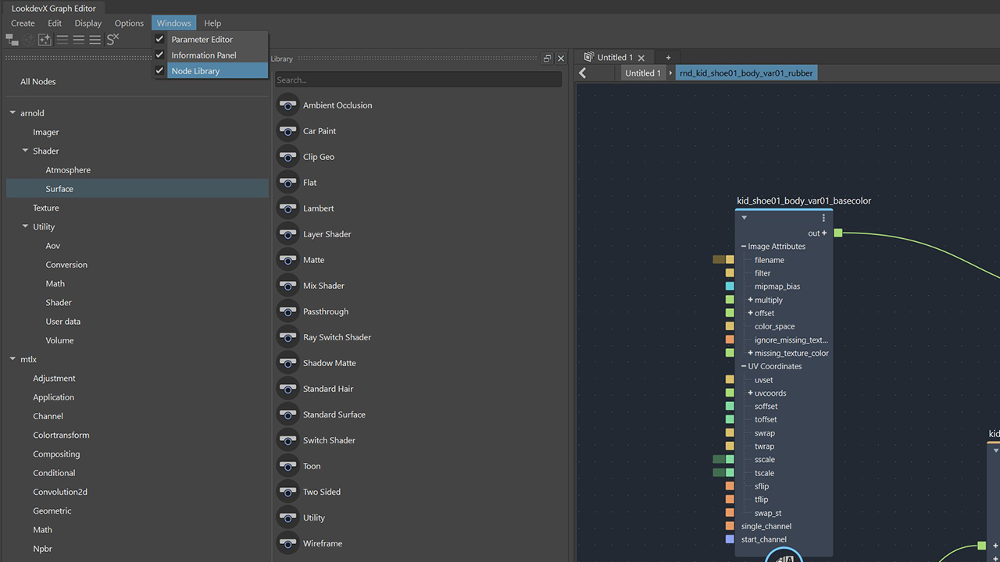
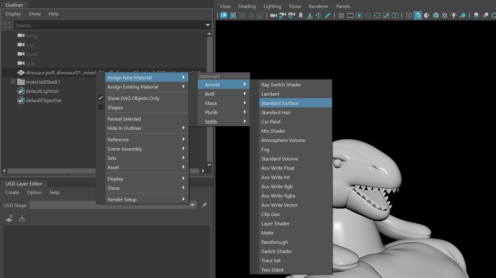

LookdevX for Maya v1.4.0 Release Notes
Release Highlights
Hide input nodes
In LookdevX 1.4, you can hide input nodes with a simple right-click to keep your graph clean. You can also view connection details by hovering over the extended port.

Node library
The new node library enables quick browsing and selection from categorized nodes, enhancing your overall efficiency.

Material assignment menu in the Outliner and Viewport
A new material assignment menu is now available in both the Outliner and Viewport. You can easily select and assign materials to your models.

Support volume shaders
In addition to surface and displacement shaders, this update also supports volume shaders in the MaterialX data model.
Viewport support for Arnold materials
The latest update allows Arnold materials to be displayed in the viewport when using the MaterialX data model. Currently the supported nodes include:
- standard_surface
- image
- color_correct
- abs
- add
- complement
- cross
- divide
- exp
- float_to_rgb
- float_to_rgba
- fraction
- max
- min
- mix_rgba
- modulo
- multiply
- negate
- normalize
- pow
- reciprocal
- sign
- sqrt
- subtract
Note:
This feature requires Arnold 7.3.2. See install Arnold.

What's Fixed
| [Compound] Crash when grouping a node with component connection to output node LOOKDEVX-2501 |
| [Compound] Promoting enum string port results in a basic string LOOKDEVX-2403 |
| [LOOKDEVXUSD] Relative path options are missing in the file browser UI LOOKDEVX-2765 |
| [LOOKDEVXUSD] Anonymous Layers: USD Relative for File Dependencies doesn't work with LookDevX file loading LOOKDEVX-2764 |
| [MTLX] Performance Degradation in Graph with Compound Nodes Having Ports LOOKDEVX-2763 |
| [MTLX] Deleting and Undoing a port changes its order in the compound LOOKDEVX-2728 |
| [MTLX] When creating nodes at the root level, documents have the wrong name. LOOKDEVX-2657 |
| [MTLX] Crash when converting from and to port on swizzle/convert node LOOKDEVX-2628 |
| [MTLX] Show in LookdevX on a mtlx document in the outliner opens on a USD graph LOOKDEVX-2610 |
| [MTLX] unrecognized node type when stack is grouped LOOKDEVX-2582 |
| [MTLX]Hidden connections can be accessed from Maya AE LOOKDEVX-2546 |
| [MTLX] Explode failed to clear promoted ports LOOKDEVX-2543 |
| [MTLX] Issues with LookdevX Maya AE LOOKDEVX-2540 |
| [MTLX] Locking attribute in Maya AE will be permanently locked LOOKDEVX-2531 |
| [MTLX] Grouping an invalid connection breaks the shader node that was connected LOOKDEVX-2530 |
| [MTLX] Crash when exploding compound with component connection LOOKDEVX-2522 |
| [MTLX]Error when making and removing component connections LOOKDEVX-2429 |
| [MTLX] Solo is retained even after a new session LOOKDEVX-2411 |
| [MTLX] Performance issue with grouping image node LOOKDEVX-2405 |
| [MTLX] Component connections aren't deleted correctly when a node is deleted. LOOKDEVX-2378 |
| [MTLX] Assign Material to Selection should be greyed out when nothing is selected LOOKDEVX-2367 |
| [MTLX] LookdevX should provide a generic AE template to Maya LOOKDEVX-2254 |
| [MTLX]Relative path does not work after saving and referencing the Mtlx file LOOKDEVX-2199 |
| [Mtlx] Issue with Tab Menu Differentiating Arnold and mtlx Nodes in VNN LOOKDEVX-2738 |
| [S] shortcut with no nodes selected in the Graph also triggers Set Keys feature LOOKDEVX-2805 |
| [Typeless] Node name glitch when changing node type LOOKDEVX-2650 |
| [Typeless] Error when changing node type LOOKDEVX-2633 |
| [Typeless] Crash when switching types on Converter Nodes LOOKDEVX-2631 |
| [Typeless] Type label flips LOOKDEVX-2630 |
| [Typeless] Changing node type fails to convert values LOOKDEVX-2406 |
| [UDIM] AE file picker should replace digits with |
| [USD]Freeze/crash when zooming into compound with exposed ports LOOKDEVX-2778 |
| [USD] Refresh issue with disconnecting output connection in the shader level LOOKDEVX-2727 |
| [USD]Hidden connections can be accessed from Maya AE LOOKDEVX-2547 |
| [USD] Error: UfeCommandObject when soloing a node in the graph LOOKDEVX-2510 |
| [USD] Component connections aren't deleted correctly when a node is deleted. LOOKDEVX-2377 |
| Crash solo hotkey in input/output nodes LOOKDEVX-2775 |
| Refresh issue with making component connection to a single port LOOKDEVX-2767 |
| Typeless conversion: Connections on component are not transferred if a connection on root port is also present LOOKDEVX-2766 |
| Error when opening a file with wrong data model tab active in LookdevX graph LOOKDEVX-2762 |
| Arrow Key Navigation Past Tab Menu Search Results Causes Crash LOOKDEVX-2761 |
| Module error when saving and reopening a scene file with USD data LOOKDEVX-2756 |
| Graph Info bar does not display the info when hovering over error/warning nodes LOOKDEVX-2744 |
| UDIM texture with unknown file path crash Maya LOOKDEVX-2737 |
| Surface shader should prioritize interface connections when fetching values LOOKDEVX-2736 |
| Error:'filename' versus 'string' when making input connection on an Image node programatically LOOKDEVX-2735 |
| Refresh issue with demoting port LOOKDEVX-2734 |
| Crash dragging nodes from the graph editor node library LOOKDEVX-2730 |
| Fix OptionsMenu if there are not tabs in the editor LOOKDEVX-2692 |
| Crash when using Solo hotkey "s" LOOKDEVX-2684 |
| Cleanup existing component connections when establishing new ones LOOKDEVX-2661 |
| Crash on VNNPortWidget when diving into a compound LOOKDEVX-2652 |
| Drag and drop nodes from the node library sometime crashes Maya LOOKDEVX-2648 |
| Cannot select objects by material (single selection) when clicking on the material in the Outliner LOOKDEVX-2634 |
| Vnn crash with filenew action LOOKDEVX-2598 |
| Crash with Undoing Hide Input node action on nodes with backdrop LOOKDEVX-2555 |
| Hide Input Node action hides the backdrops in the graph LOOKDEVX-2552 |
| LookdevX hides child prims in USD hierarchy LOOKDEVX-2521 |
| Error: 'NoneType' object has no attribute 'sceneItem' when accessing shader nodes in outliner LOOKDEVX-2503 |
| IntelMac LOOKDEVX-2485 |
| IntelMac LOOKDEVX-2484 |
| USD TabMenu displays two homonym entries LOOKDEVX-2462 |
| Hide Input and Output node from tab search menu LOOKDEVX-2418 |
| Working with two data models at the same time lead to crash LOOKDEVX-2415 |
| Issue with Undo after deleting solo'd shader inside a compound LOOKDEVX-2410 |
| MaterialX: BSDF/EDF ports incorrectly wrapped as Ufe::AttributeString LOOKDEVX-2409 |
| Remove light listings from the tab menu LOOKDEVX-2372 |
| The combine and separate nodes should be presented as typeless LOOKDEVX-2371 |
| Refresh issue in VP with MaterialX fractal3d nodes LOOKDEVX-2360 |
| Frame Selection/All weird behavior LOOKDEVX-2327 |
| Texture appears lighter (in color) when initially created in the viewport. LOOKDEVX-2300 |
| Tangent reader connection with object space crashes Maya LOOKDEVX-2190 |
| All tools in the tool bar should be displayed in the graph welcome screen LOOKDEVX-2167 |
| Connections on Input node ports are reversed inside nested compound LOOKDEVX-2136 |
| One single wrong connection marks all connections as error LOOKDEVX-2017 |
| Add typeless mechanism for Gltf image nodes LOOKDEVX-1884 |
| Graph: Hotkeys missing for Duplicate options in the node context menu LOOKDEVX-1475 |
Known Limitations
| [MayaAE] Error when click on Input/Output navigation button in Maya Attribute Editor LOOKDEVX-2541 |
| [MAC] Node name field should not be resizable LOOKDEVX-2665 |
| [MTLX] Renaming node removes the error display from the node LOOKDEVX-2758 |
| [MTLX] Unable to properly display Functional Node Graphs. LOOKDEVX-2755 |
| [MTLX] Renaming node inside compound doesn't (always) work. LOOKDEVX-2706 |
| [MTLX]Grouping Arnold shader node creates validation error LOOKDEVX-2529 |
| [MTLX] Hide non-renderable nodes from the outliner/viewportcontext menu LOOKDEVX-2511 |
| [MTLX] Promoting Mtlx image file port changes colorspace of a texture LOOKDEVX-2502 |
| [UFE] Python bindings for ufe.AttributeInfo.attribute produces invalid attribute LOOKDEVX-2743 |
| Attribute editor for MaterialXSurface stuck on first UFE path explored LOOKDEVX-2806 |
| Crash dragging port wire and promoting it with right-click option LOOKDEVX-2792 |
| Invalid connections after changing type LOOKDEVX-2731 |
| Crash when clicking on the Image node file path LOOKDEVX-2680 |
| Shader Compilation Failure when opening an old scene file with Image node LOOKDEVX-2678 |
| Aliasing issue with unfiltered textures in VP2 LOOKDEVX-2647 |
| Locking attribute in Maya AE changes values LOOKDEVX-2622 |
| Error when loading LookdevX scene with 3rd party studio libraries( ex: Arnold nodes without MtoA loaded) LOOKDEVX-2577 |
| Texture looks tiled in VP when using some Image nodes LOOKDEVX-2559 |
| Grouping a port on a compound in the graph does not trigger a refresh of the MAYA AE LOOKDEVX-2545 |
| Issue with drag/dropping file in Maya AE image file tab LOOKDEVX-2539 |